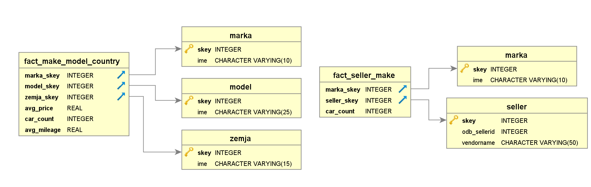

---
redirect_from:
  - "/02set-up-the-databases/databases"
title: |-
  Setting up the Databases
pagenum: 1
prev_page:
  url: /01Introduction/introduction.html
next_page:
  url: /03Initial/initial.html
suffix: .md
search: public not null int table skey postgresql create database oids false tablespace pgdefault key references model marka generated default identity primary varchar alter owner postgres mongodb warehouse set using docker following bitnami ime zemja seller cloud our used tables adid car sellerid name droplet server conf presented diagram div markaskey real carcount atlas fully managed came hand deciding where host its free charge sandbox mode offers mb storage shared clusters cpu ram store different collections same relational databases cars fields describing equipment price ads title url ad sellers city county joined unique id values virtual machine digitalocean comes pre installed

comment: "***PROGRAMMATICALLY GENERATED, DO NOT EDIT. SEE ORIGINAL FILES IN /content***"
---

    <main class="jupyter-page">
    <div id="page-info"><div id="page-title">Setting up the Databases</div>
</div>
    <div class="jb_cell">

<div class="cell border-box-sizing text_cell rendered"><div class="inner_cell">
<div class="text_cell_render border-box-sizing rendered_html">
<h2 id="MongoDB-database">MongoDB database<a class="anchor-link" href="#MongoDB-database"> </a></h2><p>The <strong>MongoDB Atlas</strong> which is a <em>fully-managed cloud database</em> came in hand when deciding where to host our MongoDB database. Its free of charge sandbox mode offers a 512mb storage with shared clusters, CPU and RAM. We used this database to store 3 different collections (same as tables in relational databases):</p>
<ul>
<li><strong>Cars</strong> (AdID, Car Make,Car Model, Number of fields describing equipment, Price)</li>
<li><strong>Ads</strong> (AdID, SellerID, Title, URL of the ad )</li>
<li><strong>Sellers</strong> (SellerID, Name, City, County)</li>
</ul>
<p>As you can see all of them can be joined on their unique ID values</p>
<h2 id="PostgreSQL-Warehouse">PostgreSQL Warehouse<a class="anchor-link" href="#PostgreSQL-Warehouse"> </a></h2><p>We set up the PostgreSQL database on a  droplet(a virtual machine) from DigitalOcean which we are using as a cloud server. Each droplet comes with pre-installed UbuntuOS on it. The database was set up using a <strong>Docker Image</strong> using the following commands:</p>

<pre><code>docker pull bitnami/postgresql
docker run --name postgresql -v /path/to/postgresql-persistence/conf/:/bitnami/postgresql/conf/ -p 5432:5430 -e POSTGRESQL_PASSWORD=pass bitnami/postgresql:latest</code></pre>
<p>This allowed us to set up our warehouse on the server. The warehouse logic is presented with the following diagram:</p>
<div>

</div><p>In order to create the tables presented in the diagram above, the following code was used:</p>

<pre><code>Create Table public.Marka(
    skey int GENERATED BY DEFAULT AS identity not null primary key,
    Ime varchar(10)  --ke bide i key za da se povrzi so bazata
)

WITH (
    OIDS = FALSE
)
TABLESPACE pg_default;

Create Table public.Model(
    skey int GENERATED BY DEFAULT AS identity not null primary key,
    Ime varchar(10)
)

WITH (
    OIDS = FALSE
)
TABLESPACE pg_default;

Create Table public.Zemja(
    skey int GENERATED BY DEFAULT AS identity not null primary key,
    Ime varchar(15)
)

WITH (
    OIDS = FALSE
)
TABLESPACE pg_default;

Create Table public.Seller(
    skey int GENERATED BY DEFAULT AS identity not null primary key,
    ODB_SellerID int,
    VendorName varchar(50)
)

WITH (
    OIDS = FALSE
)
TABLESPACE pg_default;


ALTER TABLE public.Marka
    OWNER to postgres;

ALTER TABLE public.Model
    OWNER to postgres;

ALTER TABLE public.Zemja
    OWNER to postgres;

ALTER TABLE public.Seller
    OWNER to postgres;


Create Table public.fact_Make_Model_Country(
    Marka_skey int NOT NULL references public.Marka(skey),
    Model_skey int NOT NULL references public.Model(skey),
    Zemja_skey int NOT NULL references public.Zemja(skey),
    Avg_Price real not null,
    Car_Count int not null,
    Avg_Mileage real not null   
)
WITH (
    OIDS = FALSE
)
TABLESPACE pg_default;

Create Table public.fact_Seller_Make(
    Marka_skey int NOT NULL references public.Marka(skey),
    Seller_skey int NOT NULL references public.Seller(skey),
    Car_Count int not null
)
WITH (
    OIDS = FALSE
)
TABLESPACE pg_default;</code></pre>

</div>
</div>
</div>
</div>

 


    </main>
    